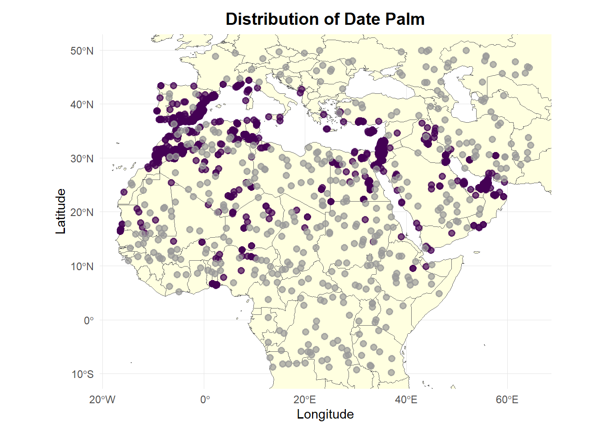
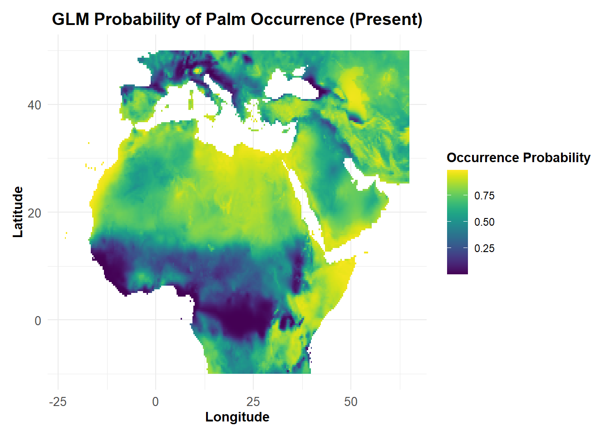
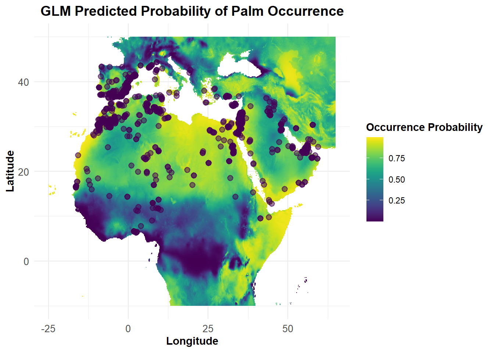
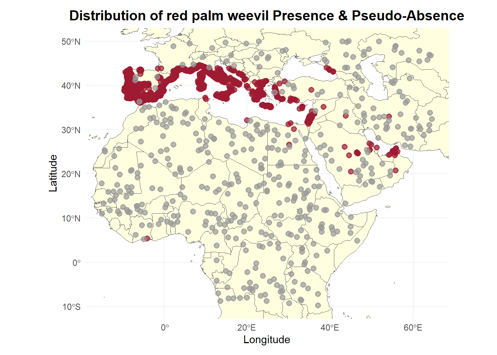
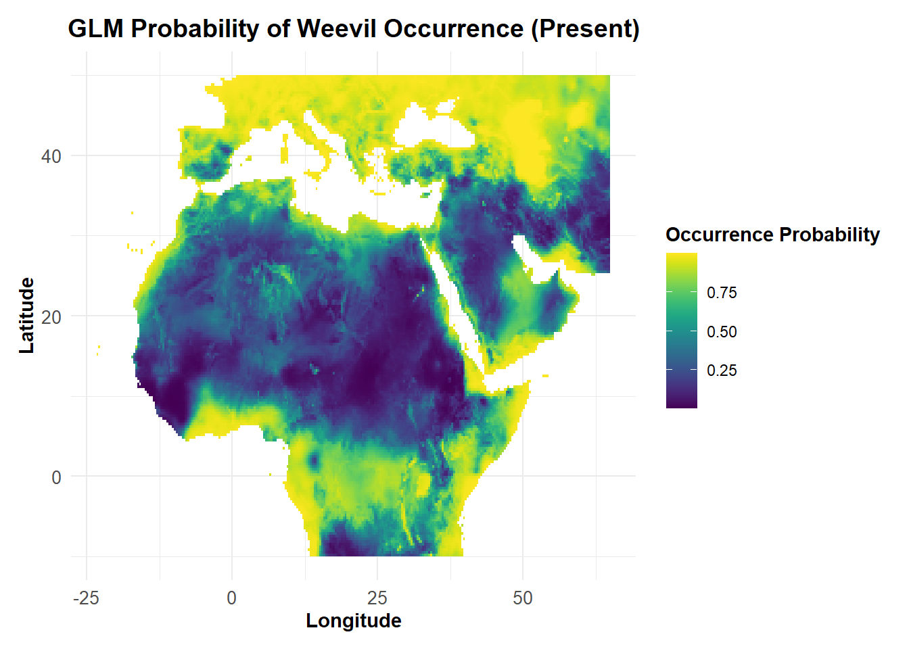
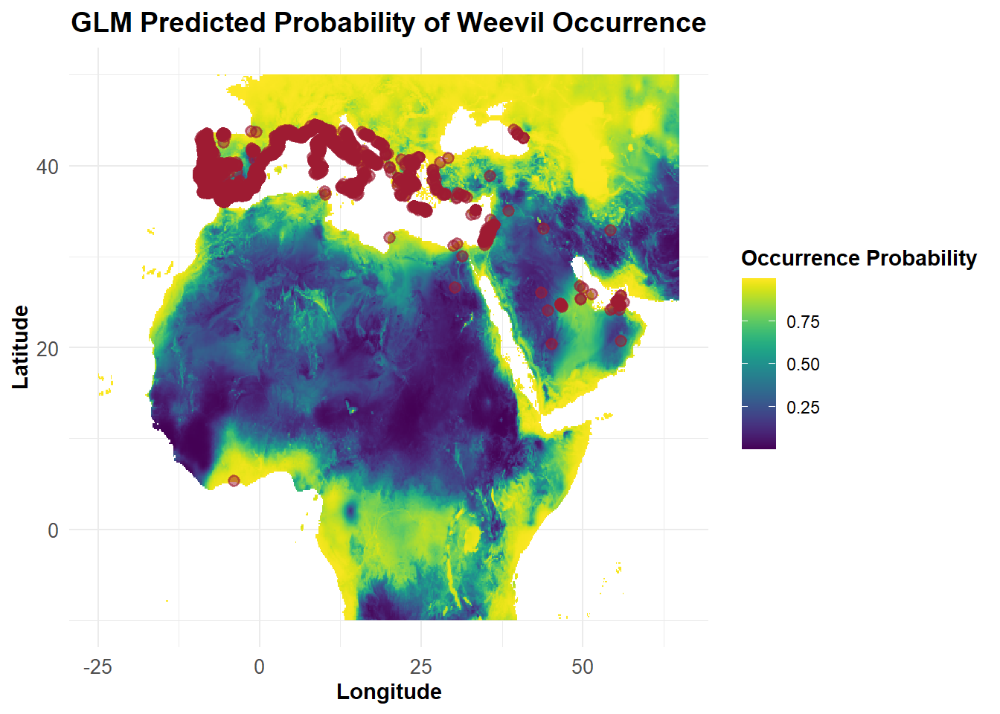
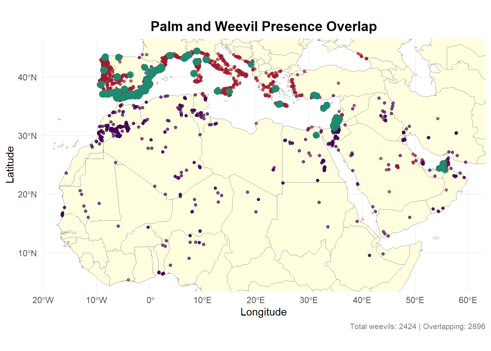
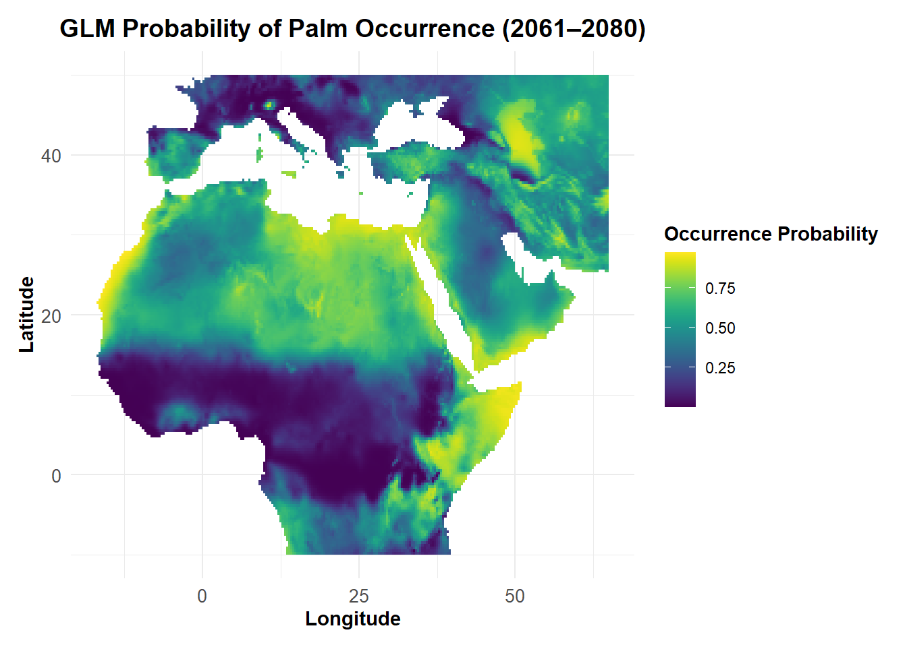
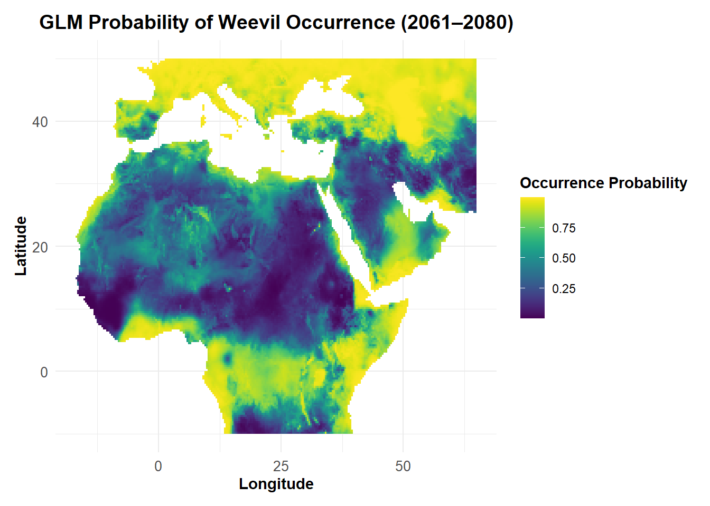

# Restore the exact package versions used when the script was created
# This ensures that the same set-up is used as when the code was originally developed
renv::restore()- The library is already synchronized with the lockfile.Important note: Comprehensive instructions, including all prerequisites and detailed guidelines for running this analysis and relevant code, are available in the README file of my GitHub repository for this project. Please refer to the README to ensure proper setup and usage.
Before starting the analysis, the environment needs to be properly configured to match the that which was used during the development of this project. This ensures that all dependencies and required libraries are installed correctly and that the analysis can be run reproducibly on different machines.
The renv package is used to manage R package environments, ensuring that the correct versions of libraries are installed to avoid compatibility issues. The renv::restore() command reads the renv.lock file, which contains a snapshot of the package versions used during the initial setup. If any packages are missing or have mismatched versions, they will be automatically installed or updated to match the specified environment. This ensures that the project runs consistently across different systems.
# Restore the exact package versions used when the script was created
# This ensures that the same set-up is used as when the code was originally developed
renv::restore()- The library is already synchronized with the lockfile.Once the environment is set up, the libraries that will be used throughout the analysis need to be loaded. The load_libraries() function is sourced from an external script (libraries.R) and ensures that all required libraries are loaded in one step. Please refer to this script for a more comprehensive description of each package used.
# Source the library loading function from the libraries file
# Detailed description of each library and its use can be found in the sourced file
source(here::here("functions", "libraries.R"))
# Load necessary libraries using the custom function
load_libraries()As global climates change, ecosystems are facing increasingly unpredictable conditions that disrupt species interactions1. For agricultural crops, this poses a significant challenge, as pests and pathogens spread more rapidly into new areas2. In particular, climate change is expected to exacerbate the spread of invasive pests like the red palm weevil (Rhynchophorus ferrugineus), which threatens the date palm (Phoenix dactylifera). Warmer temperatures, increased rainfall, and changing humidity levels could create more favourable conditions for the weevil, allowing it to expand into regions previously unaffected, thereby potentially putting date palm cultivation at greater risk.
This growing problem highlights the need to understand how climate change will influence the interactions between crops and pests. In this analysis, Species Distribution Models (SDMs) are used to predict how the distributions of the date palm and the red palm weevil might shift under future climate scenarios, helping to assess potential risks and inform management strategies for protecting date palms in the face of climate change.
The analysis focuses on regions where the date palm is native, including North Africa, the Middle East, and parts of southern Europe. These areas are not only important for date palm cultivation but also for the species’ natural occurrence. Given that the red palm weevil is a major pest of date palms, it is likely to be found in these regions, as confirmed by preliminary analyses.
Additionally, a buffered extent around the defined study region was applied to ensure adequate coverage of surrounding habitats and to facilitate pseudo-absence sampling for model calibration.
# Define study extent explicitly (longitude: -20 to 60, latitude: -5 to 45)
study_region <- terra::ext(-20, 60, -5, 45)
# Create a 5-degree buffered region for broader analysis
buffered_region <- extend(study_region, 5)A global land shapefile (world_map) representing the global land areas, is used as a reference to create a study area mask. This mask helps focus the analysis on the specified geographic area, ensuring that only relevant land regions are included in the study.
# Load global land shapefile for reference
world_map <- world(path = ".")
# Convert widened study region to raster for masking
study_area_mask <- terra::rasterize(world_map, rast(buffered_region))Occurrence records for Phoenix dactylifera (and later for Rhynchophorus ferrugineus) were obtained from the Global Biodiversity Information Facility (GBIF), a large online database that compiles biodiversity data from various sources, including museums, research institutions, and citizen science initiatives3. GBIF provides information on species distributions, including location, date, and environmental context.
Before proceeding with the analysis, the raw dataset for Phoenix dactylifera occurrence records must first be processed to ensure it is appropriately structured. Accordingly, the raw data is cleaned and restructured, keeping only the most relevant variables and removing unnecessary columns. The data is then filtered to focus on the geographic region of interest and ocean points are excluded to ensure the analysis focuses on terrestrial occurrences of Phoenix dactylifera.
A full breakdown of these data processing steps is implemented in the loading_and_processing.R script, which is sourced in the chunks to ensure proper data handling and preparation for the analysis.
# Source data loading function
source(here("functions", "loading_and_processing.R"))
# Load raw GBIF data for date palm
palm_raw <- load_gbif_data("Phoenix dactylifera")# Source data processing functions
source(here("functions", "loading_and_processing.R"))
# Create presence data for date palm
palm_presence_data <- palm_raw %>%
clean_species_data() %>% # Remove duplicates and missing values
filter_coords() %>% # Filter coordinates to study region
get_mainland_points () # Filters out ocean points
# Save full distribution dataset
saveRDS(palm_presence_data, here("data", "processed", "palm_presence_data.rds"))Since the presence data sourced from GBIF only includes locations where the species has been observed, pseudo-absence points are used to represent areas where the species is not present, creating a balanced dataset for species distribution modeling. These points help account for the environmental conditions where the species could potentially occur but has not been observed, allowing for more accurate modeling of its potential distribution. In this analysis, 500 pseudo-absence points are generated to complement the presence data and improve the model’s predictive power.
# Source data processing function
source(here("functions", "loading_and_processing.R"))
# Generate distribution data with pseudo-absence points
palm_distribution_data <- generate_pseudo_absence_data(palm_presence_data, num_points = 500)
# Save full distribution dataset
saveRDS(palm_distribution_data, here("data", "processed", "palm_distribution_data.rds"))To visualise the distribution of Phoenix dactylifera, a map was created using observed occurrences and pseudo-absence points. The plotting functions for generating this map are sourced from the plotting.R script, where all the plotting functions are stored. For further details on the plotting function, please refer to this script.
# Source plotting function
source(here("functions", "plotting.R"))
# Create distribution plot
plot_species_distribution(palm_distribution_data, palm_colour, title = "Distribution of Date Palm")
Figure 1: Map showing the distribution of date palm across the study region.
Figure 1 shows the geographic distribution of Date Palm within the study region. Purple points represent confirmed presence locations obtained from GBIF occurrence data, while grey points indicate pseudo-absence points. The distribution demonstrates the species’ concentration across North Africa, the Middle East, and parts of southern Europe, highlighting its native range and primary ecological zones.
The bioclimatic data is sourced from the WorldClim database, which provides high-resolution global climate data. The dataset includes various bioclimatic variables such as temperature, precipitation, and seasonality, which are crucial for understanding species distributions4. In this analysis, the specific bioclimatic data for the region of interest is either loaded from an existing file or downloaded and cropped to fit the study area.
# Define file path for bioclimatic data
bioclim_file_path <- here("data", "raw", "climate", "wc10.tif")
# Load existing raster or download and crop bioclimatic data
if (file.exists(bioclim_file_path)) {
bioclim_data <- rast(bioclim_file_path) # Load existing raster
} else {
# Download, crop, and save bioclimatic data if not available
bioclim_data <- crop(worldclim_global(var = "bio", res = 10, path = here("data", "raw", "climate")), buffered_region)
writeRaster(bioclim_data, bioclim_file_path, overwrite = TRUE)
}The selection of bioclimatic variables for Phoenix dactylifera was based on previous literature showing that temperature extremes and moisture availability are the most critical factors affecting its distribution 5 6. Specifically, the following variables were chosen:
BIO5 (Max Temperature of the Warmest Month): Date Palms are sensitive to extreme heat, and this variable is crucial for assessing heat stress during the hottest periods, as noted in previous research.
BIO6 (Min Temperature of the Coldest Month): This variable reflects the species’ low tolerance for cold temperatures, ensuring suitability for warmer regions.
BIO14 (Precipitation of the Driest Month): Selected to capture the species’ tolerance to drought conditions, which is a key factor for Date Palm survival in arid environments.
BIO16 (Precipitation of the Wettest Quarter): Chosen due to the species’ sensitivity to wet stress, particularly during fruit ripening, which has been emphasized in earlier studies.Variables like BIO5 (Max Temperature of the Warmest Month), BIO6 (Min Temperature of the Coldest Month), BIO14 (Precipitation of the Driest Month), and BIO16 (Precipitation of Wettest Quarter) were chosen because they directly influence the species’ survival, with temperature and moisture extremes being key limiting factors.
Although also identified as potentially relevant for predicting Phoenix dactylifera distributions, BIO10 (Mean Temperature of the Warmest Quarter) and BIO12 (Annual Precipitation) were excluded due to high collinearity with BIO5 and BIO16, and their lower relevance for capturing the critical temperature and moisture extremes affecting Date Palm’s growth.
These decisions were guided by preliminary analyses conducted in the choosing_bioclims.R script (under supplementary scripts folder), which assesses the correlations between selected bioclimatic variables. Please refer to this script for further detail.
# Source processing function
source(here("functions", "loading_and_processing.R"))
# Select and extract relevant bioclimatic variables
palm_model_data <- selected_bioclims(palm_distribution_data,
selected_bioclims = c("bio5", "bio6", "bio14", "bio16")
)
# Save processed dataset
saveRDS(palm_model_data, here("data", "processed", "palm_model_data.rds"))The final model for Phoenix dactylifera was selected using AIC and AUC scores, as evaluated through model fitting and cross-validation (following Hijmans and Elith, 2019, recommendation 7). The process, detailed in the model_testing_script.R, involved fitting multiple Generalized Linear Models (GLMs) with selected bioclimatic variables.
AIC-based Model Selection: Models were compared using AIC, and the model with the lowest AIC was selected for its balance between goodness of fit and simplicity.
K-fold Cross-Validation (AUC): Models were further assessed using K-fold cross-validation, with AUC scores indicating the model with the best predictive performance.
The final model was chosen based on superior AIC and AUC scores, ensuring both statistical validity and predictive accuracy. For further details on the model selection, please refer to the model_testing_script.R.
# Fit final GLM model with selected bioclimatic variables
final_palm_model <- glm(presence ~ bio5 + bio6 + bio14 + bio16,
family = binomial(link = "logit"), data = palm_model_data)
# Print model summary
summary(final_palm_model)
Call:
glm(formula = presence ~ bio5 + bio6 + bio14 + bio16, family = binomial(link = "logit"),
data = palm_model_data)
Coefficients:
Estimate Std. Error z value Pr(>|z|)
(Intercept) 10.043605 0.657948 15.265 < 2e-16 ***
bio5 -0.220174 0.017377 -12.670 < 2e-16 ***
bio6 0.053638 0.012646 4.242 2.22e-05 ***
bio14 -0.079070 0.009667 -8.179 2.85e-16 ***
bio16 -0.005936 0.000469 -12.657 < 2e-16 ***
---
Signif. codes: 0 '***' 0.001 '**' 0.01 '*' 0.05 '.' 0.1 ' ' 1
(Dispersion parameter for binomial family taken to be 1)
Null deviance: 2143.6 on 2006 degrees of freedom
Residual deviance: 1788.6 on 2002 degrees of freedom
AIC: 1798.6
Number of Fisher Scoring iterations: 5Palm Model Summary: GLM for date palm distribution
The date palm distribution model reveals that occurrence probability decreases with increasing maximum temperatures and reduced precipitation, while slightly increasing with warmer winter temperatures. All bioclimatic variables are statistically significant, demonstrating the species’ sensitivity to temperature and moisture extremes across its habitat range.
This GLM model was used to predict the climatic suitability of Date Palm across the study region. The output is plotted on Figure 2 and Figure 3.
# Source plotting function
source(here("functions", "plotting.R"))
# Create probability plot without points
plot_glm_probability_raster(
final_glm_model = final_palm_model,
climate_data = bioclim_data,
buffered_region = buffered_region,
title = "GLM Probability of Palm Occurrence (Present)"
)
|---------|---------|---------|---------|
=========================================

Figure 2: Heat map showing the climatic suitability for date palm using the final_palm_model.
This heat map depicts the predicted climatic suitability for Phoenix dactylifera across North Africa, the Middle East, and southern Europe, using a color gradient representing occurrence probability from 0 to 1. Deep purple regions (indicating 75-100% probability) are concentrated in specific areas of North Africa, particularly along the western and northern coastal zones, and in concentrated pockets of the Arabian Peninsula. Yellows and greens (25-50% probability) dominate much of the broader region, including interior North African territories and parts of the Middle East. The plot highlights spatial variations in habitat suitability, with the most favourable conditions appearing in coastal and sub-coastal zones characterised by specific temperature and precipitation regimes. Areas of lowest probability (blue to teal) are evident in the northern Mediterranean regions and higher elevation areas, reflecting the species’ sensitivity to temperature and moisture constraints.
# Source plotting function
source(here("functions", "plotting.R"))
# Create probability plot with presence points
plot_probability_raster_and_presence(
palm_presence_data,
final_glm_model = final_palm_model,
buffered_region = buffered_region,
species_colour = palm_colour,
title = "GLM Predicted Probability of Palm Occurrence"
)
|---------|---------|---------|---------|
=========================================

Figure 3: Heat map showing the date palm occurrence probability with presence points.
Figure 3 combines the GLM-predicted climatic suitability with actual presence points for date palm. Notably, the purple presence points strategically cluster in areas of higher predicted probability, demonstrating a strong overall correlation between the model’s predictions and actual species distribution. However, the relationship is not perfectly uniform. While most points are concentrated in coastal regions and areas with favourable climatic conditions (yellow to green zones of 50-75% probability), there are notable discrepancies. Some presence points appear in areas of lower predicted suitability, particularly in the northern Mediterranean and transition zones, suggesting that local microclimatic factors or other biotic variables not captured by the model may influence species distribution. Conversely, some high-probability regions (dark blue and purple zones) show fewer presence points, indicating potential habitat suitability that has not yet been fully explored or documented. These variations highlight the limitations of relying solely on broad climatic variables to predict exact species occurrence.
The occurrence records for Rhynchophorus ferrugineus were sourced from GBIF, similarly to Phoenix dactylifera.
The same data processing steps were applied to the raw weevil data - including cleaning the data, filtering for the study region, and generating pseudo-absence points - reusing the functions from the loading_and_processing.R script.
# Source data loading function
source(here("functions", "loading_and_processing.R"))
# Load raw GBIF data for red palm weevil
weevil_raw <- load_gbif_data("Rhynchophorus ferrugineus")# Source data processing functions
source(here("functions", "loading_and_processing.R"))
# Create presence data for red palm weevil
weevil_presence_data <- weevil_raw %>%
clean_species_data() %>% # Remove duplicates and missing values
filter_coords() %>% # Filter coordinates to study region
get_mainland_points() # Remove ocean points
# Save processed presence data
saveRDS(weevil_presence_data, here("data", "processed", "weevil_presence_data.rds"))# Source data processing function
source(here("functions", "loading_and_processing.R"))
# Generate distribution data with pseudo-absence points
weevil_distribution_data <- generate_pseudo_absence_data(weevil_presence_data, num_points = 500)
# Save full distribution dataset
saveRDS(weevil_distribution_data, here("data", "processed", "weevil_distribution_data.rds"))Figure 4 was created using observed occurrences and pseudo-absence points to visualise the distribution of Rhynchophorus ferrugineus.
# Source plotting function
source(here("functions", "plotting.R"))
# Create distribution plot
plot_species_distribution(weevil_distribution_data, weevil_colour, title = "Distribution of red palm weevil Presence & Pseudo-Absence")
Figure 4: Map showing the distribution of red palm weevil across the study region.
This map illustrates the spatial distribution of red palm weevil occurrence across North Africa, the Middle East, and southern Europe. Red points represent confirmed presence locations, while grey points indicate pseudo-absence sampling sites. The red palm weevil presence is notably concentrated along the Mediterranean coastal regions, with dense clusters in southern Spain, coastal North Africa (particularly Tunisia and Algeria), and the Levantine coast. The grey pseudo-absence points provide a comprehensive background, highlighting the potential habitat range beyond confirmed occurrence locations. The distribution suggests the weevil’s preference for coastal and sub-coastal environments with specific climatic and ecological conditions conducive to its survival and spread.
To select the appropriate bioclimatic variables for Rhynchophorus ferrugineus a brief review of prior research was done, which highlighted the importance of temperature extremes and moisture availability as key environmental factors influencing its habitat suitability 8.
The following variables were selected for modeling the species’ distribution:
-BIO2 (Mean Diurnal Temperature Range): This variable was chosen to reflect the weevil’s tolerance for temperature fluctuations, which is vital for its survival in warm climates, where high heat is prevalent.
-BIO6 (Min Temperature of the Coldest Month): This variable is critical as the red palm weevil is highly sensitive to cold temperatures, which restricts its ability to expand into cooler regions. It plays a significant role in understanding the species’ capacity to overwinter in colder environments.
-BIO16 (Precipitation of the Wettest Quarter): The red palm weevil’s sensitivity to excessive moisture during the wettest part of the year makes this variable important, particularly as wet conditions can negatively impact its survival during the reproductive phase.
-BIO17 (Precipitation of the Driest Quarter): Given the species’ preference for warm, humid environments, this variable captures the effect of dry periods that may limit its expansion into arid regions.
BIO1 (Annual Mean Temperature) was excluded from the analysis due to its high correlation with BIO2 (Mean Diurnal Temperature Range), since the annual mean temperature does not effectively capture the extreme conditions that are more relevant for the species’ survival. Instead, BIO6 was retained as it is more indicative of cold stress.
For further details on the variable selection process, please refer to the choosing_bioclims.R script
# Process data for selected bioclimatic variables
weevil_model_data <- selected_bioclims(weevil_distribution_data,
selected_bioclims = c("bio2", "bio6", "bio16", "bio17")
)
# Save processed dataset
saveRDS(weevil_model_data, here("data", "processed", "weevil_model_data.rds"))The final model was chosen based on superior AIC and AUC scores, ensuring both statistical validity and predictive accuracy. For further details on the model selection, please refer to the model_testing_script.R.
# Fit final GLM model with selected bioclimatic variables
final_weevil_model <- glm(presence ~ bio2 + bio16 + bio17,
family = binomial(link = "logit"), data = weevil_model_data)
# Print model summary
summary(final_weevil_model)
Call:
glm(formula = presence ~ bio2 + bio16 + bio17, family = binomial(link = "logit"),
data = weevil_model_data)
Coefficients:
Estimate Std. Error z value Pr(>|z|)
(Intercept) 13.5074726 0.6373303 21.194 <2e-16 ***
bio2 -0.9746292 0.0473435 -20.586 <2e-16 ***
bio16 -0.0038899 0.0004397 -8.847 <2e-16 ***
bio17 -0.0002388 0.0019098 -0.125 0.9
---
Signif. codes: 0 '***' 0.001 '**' 0.01 '*' 0.05 '.' 0.1 ' ' 1
(Dispersion parameter for binomial family taken to be 1)
Null deviance: 2505.4 on 2876 degrees of freedom
Residual deviance: 1443.4 on 2873 degrees of freedom
AIC: 1451.4
Number of Fisher Scoring iterations: 6Weevil model summary: GLM for red palm weevil distribution
The red palm weevil distribution model reveals two highly significant predictors with strong negative effects: temperature seasonality (bio2) and precipitation of the wettest quarter (bio16). The dramatic negative coefficient for temperature seasonality suggests the weevil is extremely sensitive to temperature fluctuations, while wet quarter precipitation also negatively impacts occurrence probability. Interestingly, precipitation of the driest quarter (bio17) shows no significant effect.
This GLM model was used to predict the climatic suitability of date palm across the study region. The output is plotted on Figure 5 and Figure 6.
The red palm weevil’s climatic suitability was predicted using the final GLM model and visualised on a map, showing high suitability in areas of the Middle East and North Africa.
# Source plotting function
source(here("functions", "plotting.R"))
# Create probability plot without points
plot_glm_probability_raster(
final_glm_model = final_weevil_model,
climate_data = bioclim_data,
buffered_region = buffered_region,
title = "GLM Probability of Weevil Occurrence (Present)"
)
|---------|---------|---------|---------|
=========================================

Figure 5: Heat map showing the climatic suitability for red palm weevil using the final_palm_model.
Figure 5 illustrates the predicted climatic suitability for Rhynchophorus ferrugineus across North Africa, the Middle East, and southern Europe. It reveals a more restricted potential distribution compared to the date palm, with highest suitability strongly linked to coastal and Mediterranean climate regions. Areas of moderate to high probability are most evident in southern Spain, coastal North Africa, the Levantine coast, and parts of the Arabian Peninsula, reflecting the weevil’s sensitivity to specific temperature and precipitation regimes.
# Source plotting function
source(here("functions", "plotting.R"))
# Create probability plot with presence points
plot_probability_raster_and_presence(
weevil_presence_data,
final_weevil_model,
buffered_region,
weevil_colour,
title = "GLM Predicted Probability of Weevil Occurrence"
)
|---------|---------|---------|---------|
=========================================

Figure 6: Heat map showing the red palm weevil occurrence probability with presence points.
This heat map integrates the GLM-predicted climatic suitability with actual presence points for the red palm weevil. The red presence points seem to cluster in areas of higher predicted probability, primarily along the Mediterranean coastal regions. While most points align with yellow and green zones of moderate to high suitability (50-75% probability), there are notable discrepancies. Some presence points appear in areas of lower predicted probability, particularly in the northern Mediterranean transition zones, suggesting that local abiotic conditions or other unaccounted variables influence species distribution. Conversely, some high-probability regions show fewer presence points, indicating potential habitat suitability not yet fully documented.
To determine the potential geographic regions where the two species may interact, a 10 km buffer was created around all confirmed presence records of Phoenix dactylifera. The buffer represents a potential interaction zone, indeed being a likely red weevil flying range 9, where both species could be present. The overlap between the red palm weevil and date palm occurrence zones was calculated by identifying the spatial intersection between the buffered date palm zone and the red palm weevil presence data.
To process the spatial data, the presence records of both species were converted into simple feature (sf) objects, which allow for easy manipulation of geographic coordinates. The coordinates for both species’ presence data were projected into a metric coordinate reference system (CRS) (EPSG: 3857) to allow for accurate distance and area calculations.
# Convert presence data to sf objects
palm_sf <- st_as_sf(palm_presence_data, coords = c("lon", "lat"), crs = 4326)
weevil_sf <- st_as_sf(weevil_presence_data, coords = c("lon", "lat"), crs = 4326)
# Project to metric CRS
crs_proj <- 3857
palm_proj <- st_transform(palm_sf, crs = crs_proj)
weevil_proj <- st_transform(weevil_sf, crs = crs_proj)
# Create buffer around palm presence points
palm_buffer <- st_buffer(palm_proj, dist = 10000)
# Calculate spatial intersection (weevils inside buffer)
weevil_overlap <- st_intersection(weevil_proj, palm_buffer)To illustrate the spatial overlap between date palm and red palm weevil distributions, a plot was created showing the presence points of both species, along with the overlapping areas. The plot highlights where the red palm weevil occurrence points intersect with the date palm buffer zone, providing a representation of their potential co-occurrence.
# Source plotting function
source(here("functions", "plotting.R"))
# Create a plot of species overlap
plot_species_overlap_points(
palm_points = palm_proj,
weevil_points = weevil_proj,
overlap_points = weevil_overlap,
title = "Palm and Weevil Presence Overlap"
)
Figure 5: Spatial co-occurrence of date palm and red palm weevil.
This overlap map illustrates the spatial overlap between the distribution of date palm and red palm weevil across North Africa, the Middle East, and southern Europe. Purple points represent confirmed date palm presence locations, while red points correspond to red palm weevil presence sites. Green points indicate the overlap between the two species, showing areas where both species occur within close proximity. As shown, the majority of overlap occurs in coastal and sub-coastal regions, particularly in parts of North Africa and the Middle East, where both species are likely to thrive. These areas are characterised by the appropriate climatic conditions for both species. The distribution of overlapping points suggests potential areas of increased risk for date palm cultivation, as these regions are more susceptible to red palm weevil infestations.
The map also indicates areas where the weevil species occurs outside the palm buffer zone (red points outside the green area), which could signify the weevil’s spread into regions where palms are not yet established. This may point to the weevil’s capacity for range expansion, potentially ahead of its primary host, which is important for early detection and control. The overlap areas highlight potential ecological interactions between the two species and underscore the importance of integrated pest management, whereby monitoring efforts should prioritise these high-risk zones, where the co-occurrence of the host and pest species could lead to greater ecological and agricultural impact.
# Calculate overlap percentage
overlap_percentage <- mean(
rowSums(st_within(weevil_proj, palm_buffer, sparse = FALSE)) > 0
) * 100
# Print result
print(overlap_percentage)[1] 28.79538The calculated overlap percentage of 28.8% indicates that approximately 28.8% of the red palm weevil presence records fall within the 10 km buffer around the date palm occurrence points. This relatively low overlap suggests that while there is some spatial co-occurrence between the two species, a substantial portion of the red palm weevil’s distribution lies outside the immediate range of date palms. This low overlap may reflect several factors, such as sampling biases, spatial barriers, or ecological constraints that prevent the two species from being more widely distributed together in the study region. It may also indicate that the red palm weevil is capable of spreading into areas not yet inhabited by date palms, possibly due to dispersal dynamics or habitat suitability in regions outside the palms’ natural range. The overlap percentage is useful for understanding the potential areas at risk for pest infestations in date palm regions. However, given the low overlap, further monitoring and analysis are needed to assess how the weevil might invade or affect date palm populations over time, particularly in regions where the two species do not yet occur together.
This section investigates the potential influence of Rhynchophorus ferrugineus presence on the distribution of Phoenix dactylifera, while controlling for key climatic variables. A Generalised Linear Model (GLM) was constructed with palm presence as the response variable, incorporating both biotic (weevil presence) and abiotic (bioclimatic) predictors to evaluate their relative contributions.
To assess spatial proximity between the two species, a 10 km buffer was applied around each recorded occurrence of P. dactylifera, allowing for the identification of R. ferrugineus locations falling within this range.
# Convert date palm presence data to spatial format
palm_sf <- st_as_sf(palm_model_data, coords = c("lon", "lat"), crs = 4326) %>%
st_transform(crs = st_crs(weevil_overlap))
# Create a 10 km buffer around date palm presence points
palm_buffer <- st_buffer(palm_sf, dist = 10000) # 10 km bufferThen the checked if the red palm weevil presence occurred within the buffer zone surrounding the date palm presence points. We added a new variable, weevil_overlap, to the date palm dataset, which indicates whether each palm point is within the weevil presence zone.
# Convert red palm weevil presence data to spatial format
weevil_sf <- st_as_sf(weevil_presence_data, coords = c("lon", "lat"), crs = 4326)
# Transform to the same CRS as palm data for spatial operations
weevil_proj <- st_transform(weevil_sf, crs = 3857)
# Check if any weevil points fall within each palm buffer
palm_model_data$weevil_overlap <- as.integer(
lengths(st_intersects(palm_buffer, weevil_proj)) > 0
)Subsequently, the analysis evaluated whether occurrences of R. ferrugineus fell within the 10 km buffer zones surrounding P. dactylifera presence points. A new binary variable, weevil_overlap, was added to the date palm dataset to indicate whether each palm location was associated with the presence of the weevil within the defined spatial threshold.
# Fit the GLM with weevil overlap as a predictor
glm_biotic_dependence <- glm(
presence ~ bio5 + bio6 + bio14 + bio16 + weevil_overlap,
data = palm_model_data,
family = binomial(link = "logit")
)
# View model summary
summary(glm_biotic_dependence)
Call:
glm(formula = presence ~ bio5 + bio6 + bio14 + bio16 + weevil_overlap,
family = binomial(link = "logit"), data = palm_model_data)
Coefficients:
Estimate Std. Error z value Pr(>|z|)
(Intercept) 7.4498750 0.7016485 10.618 < 2e-16 ***
bio5 -0.1563163 0.0184162 -8.488 < 2e-16 ***
bio6 0.0418221 0.0125153 3.342 0.000833 ***
bio14 -0.1037660 0.0136177 -7.620 2.54e-14 ***
bio16 -0.0053254 0.0004848 -10.984 < 2e-16 ***
weevil_overlap 4.9455422 0.7490590 6.602 4.05e-11 ***
---
Signif. codes: 0 '***' 0.001 '**' 0.01 '*' 0.05 '.' 0.1 ' ' 1
(Dispersion parameter for binomial family taken to be 1)
Null deviance: 2143.6 on 2006 degrees of freedom
Residual deviance: 1581.9 on 2001 degrees of freedom
AIC: 1593.9
Number of Fisher Scoring iterations: 8Palm with weevil model summary: GLM for palm distribution, including GLM for date palm distribution including bioclimatic predictors and red palm weevil overlap
As previously discussed in the Palm Model Summary, the GLM for date palm distribution shows that occurrence probability declines with rising maximum temperatures (BIO5) and decreasing precipitation (BIO14, BIO16), while increasing slightly with warmer winter conditions (BIO6). These results reinforce the ecological sensitivity of Phoenix dactylifera to both temperature extremes and water availability across its range. In this case, the inclusion of the weevil_overlap variable, which significantly improves model fit (substantial drop in AIC from 1798.6 to 1593.9), introduces a potential biotic factor influencing distribution. The positive relationship between date palm presence and areas where red palm weevils are found may not reflect direct causality but instead indicates overlapping ecological niches. Both species likely favour similar warm, moderately arid conditions — suggesting that the weevil may serve as an indirect indicator of suitable palm habitat. Alternatively, it could imply that once palms establish, they facilitate colonisation by the weevil, hinting at a host-pest dynamic that emerges under favourable environmental conditions.
To assess the potential impacts of future climate change on the distributions of Phoenix dactylifera and Rhynchophorus ferrugineus, climate projections from the Coupled Model Intercomparison Project Phase 6 (CMIP6) were utilised for the period 2061–2080. The CanESM5 general circulation model was selected under the SSP2-4.5 emissions scenario, providing projected bioclimatic variables relevant to temperature, precipitation, and other climatic conditions influencing species habitats.
The required bioclimatic data were obtained either by loading pre-existing datasets or by downloading and processing raw climate layers, which were subsequently cropped to the spatial extent of the study region.
#| label: prepare-future-bioclim-data
# Define file path
future_bioclim_file <- here("data", "raw", "climate", "cmip6_2061_2080_canesm5_ssp245.tif")
if (file.exists(future_bioclim_file)) {
future_bioclim_data <- rast(future_bioclim_file)
} else {
future_bioclim_data <- cmip6_world(
model = "CanESM5",
var = "bio",
ssp = "245",
res = 10,
time = "2061-2080",
path = here("data", "raw", "climate")
) %>%
magrittr::set_names(names(bioclim_data)) %>%
crop(buffered_region)
writeRaster(future_bioclim_data, future_bioclim_file, overwrite = TRUE)
}Using the projected future climate data, the potential future suitability of Phoenix dactylifera within the study region was modelled. Predictions were generated using the previously constructed Generalised Linear Model (GLM), which was originally trained on current bioclimatic variables.
The resulting output provides spatially explicit estimates of occurrence probability for P. dactylifera under anticipated future climatic conditions, offering insight into potential shifts in suitable habitat driven by climate change.
# Predict future suitability based on final model
palm_prediction_future <- predict(
future_bioclim_data,
final_palm_model,
ext = study_region,
type = "response"
) %>%
crop(study_region)
# Source plotting function
source(here("functions", "plotting.R"))
#
plot_glm_probability_raster(
final_glm_model = final_palm_model,
climate_data = future_bioclim_data,
buffered_region = buffered_region,
title = "GLM Probability of Palm Occurrence (2061–2080)"
)
Figure 7: Heat map showing the projected date palm occurrence probability (2061-2080). As shown in Figure 7, the projected date palm occurrence probability map for 2061-2080 illustrates the species’ potential future distribution across North Africa, the Middle East, and southern Europe. Transitioning from deep purple to bright yellow, the visualization reveals nuanced shifts in habitat suitability. Bright yellow zones indicate high probability areas, particularly in the Southern Arabian Peninsula, Nile Delta, and North African coastal regions, suggesting ecological resilience. Green intermediate zones span Central Africa and the Middle East, representing moderate occurrence potential. Deep purple regions, including the central Sahara and higher latitude areas, signal significantly reduced habitat suitability. This map fundamentally captures the date palm’s potential adaptive response to anticipated climate changes, highlighting the species’ dynamic ecological potential across complex geographical landscapes.
The future distribution of Rhynchophorus ferrugineus was projected using the same CMIP6 climate projections and modelling approach applied to Phoenix dactylifera. A Generalised Linear Model (GLM), previously developed using current bioclimatic variables, was used to estimate the future habitat suitability for the species. The prediction procedure mirrored that of the date palm model, generating occurrence probabilities for R. ferrugineus under projected climatic conditions for the 2061–2080 period.
# Predict future suitability based on final model
weevil_prediction_future <- predict(
future_bioclim_data,
final_weevil_model,
ext = study_region,
type = "response"
) %>%
crop(study_region)
# Source plotting function
source(here("functions", "plotting.R"))
# Plot
plot_glm_probability_raster(
final_glm_model = final_weevil_model,
climate_data = future_bioclim_data,
buffered_region = buffered_region,
title = "GLM Probability of Weevil Occurrence (2061–2080)"
)
Figure 8: Heat map showing the projected red palm weevil occurrence probability (2061-2080).
The red palm weevil occurrence probability map for 2061-2080 reveals a nuanced spatial distribution across North Africa, the Middle East, and southern Europe. Deep purple zones of high probability concentrate in North African coastal regions and parts of the Arabian Peninsula, while yellow and green intermediate zones extensively cover interior territories. The visualization highlights potential weevil expansion, with lowest probabilities in northern Mediterranean and high-elevation areas, suggesting complex ecological constraints and climate-driven migration patterns.
To evaluate changes in the geographic range of each species, predicted suitability rasters were first converted into binary format, where a value of 1 indicates suitable habitat and 0 indicates unsuitable habitat. This thresholding step identifies areas where the species is predicted to potentially occur under current or future climatic conditions.
The binary rasters were then transformed into spatial point geometries to enable spatial analysis. For both Phoenix dactylifera and Rhynchophorus ferrugineus, these points were used to quantify the extent of suitable habitat. Buffer zones were created around each point to approximate continuous areas of suitability, allowing for the comparison of range size and distribution under current versus projected future conditions.
# Define threshold
threshold <- 0.5
# Convert raster predictions to binary (1 = suitable)
palm_binary_future <- palm_prediction_future >= threshold
weevil_binary_future <- weevil_prediction_future >= threshold
# Convert binary rasters to point geometries
palm_future_points <- as.points(palm_binary_future, values = TRUE, na.rm = TRUE)
# Get the actual layer name (first layer in raster)
layer_name <- names(palm_binary_future)[1]
# Subset where value == 1 (suitable habitat)
palm_future_points <- palm_future_points[palm_future_points[[layer_name]] == 1, ]
# Convert to sf object
palm_future_points <- st_as_sf(palm_future_points, crs = 4326)
weevil_future_points <- as.points(weevil_binary_future, values = TRUE, na.rm = TRUE)
layer_name_weevil <- names(weevil_binary_future)[1]
weevil_future_points <- weevil_future_points[weevil_future_points[[layer_name_weevil]] == 1, ]
weevil_future_points <- st_as_sf(weevil_future_points, crs = 4326)
# Reproject to metric CRS for buffering
crs_proj <- 3857
palm_future_proj <- st_transform(palm_future_points, crs = crs_proj)
weevil_future_proj <- st_transform(weevil_future_points, crs = crs_proj)
# Create 10 km buffer around future palm points
palm_future_buffer <- st_buffer(palm_future_proj, dist = 10000)To assess potential shifts in biotic interactions under future climate scenarios, the percentage change in spatial overlap between date palm and red palm weevil was calculated. This was achieved by comparing the number of red palm weevil presence points falling within a 10 km buffer of future suitable date palm habitat to the number of overlapping points under current conditions. The resulting percentage reflects the relative change in co-occurrence zones, providing an estimate of how climate change may influence the spatial dynamics between the species.
# Use sparse = TRUE (default) for both operations
weevils_in_buffer <- weevil_proj %>%
st_within(palm_buffer) %>%
lengths() > 0 # More memory-efficient than rowSums()
# Use the same approach for future weevils
future_in_buffer <- weevil_future_proj %>%
st_within(palm_future_buffer) %>% # sparse by default
lengths() > 0 # Logical vector: TRUE if within any buffer
# Calculate percent change compared to present
overlap_change_percent <- ((sum(future_in_buffer) - sum(weevils_in_buffer)) / sum(weevils_in_buffer)) * 100
# Print the percentage change
print(overlap_change_percent)[1] 3625.535The analysis revealed a substantial projected increase—approximately 3625%—in the spatial overlap between Phoenix dactylifera and Rhynchophorus ferrugineus under future climate conditions. This suggests a marked expansion of areas where both species may co-occur, potentially heightening the risk of pest impact on date palm populations in newly suitable regions. However, this prediction should be interpreted with caution. The projected overlap is based solely on climatic suitability and assumes that both species can fully disperse into all climatically suitable areas. In reality, biological, ecological, and anthropogenic constraints—such as dispersal limitations, land use change, or pest control measures—may restrict such extensive range expansion. Additionally, the use of buffer-based spatial proximity as a proxy for biotic interaction simplifies complex ecological dynamics. Despite these limitations, the result highlights areas that may warrant increased surveillance and risk assessment under future climate scenarios.
Future climate projections suggest a modest contraction in suitable habitat for Phoenix dactylifera, while Rhynchophorus ferrugineus is expected to maintain or expand its range. As a result, the spatial overlap between the two species is projected to increase, with a higher proportion of weevil occurrences falling within close proximity to areas suitable for date palm cultivation. This implies a potential intensification of host–pest interactions under future climate conditions, highlighting the need for proactive monitoring and pest management strategies in vulnerable regions.
However, several limitations should be considered when interpreting these findings. The analysis assumes unrestricted dispersal of both species into newly suitable areas, which may not reflect real-world ecological or anthropogenic barriers. Additionally, the use of climate variables alone does not capture the full complexity of species distributions, which are also influenced by land use, biotic interactions, and human intervention. The spatial overlap based on buffer zones provides a simplified approximation of interaction potential and may overestimate actual risk. Despite these constraints, the findings offer a useful first step in identifying regions that could experience increased pest pressure in the context of climate change.
[1] Fontúrbel, F.E., Nespolo, R.F., Amico, G.C. and Watson, D.M. (2021). Climate change can disrupt ecological interactions in mysterious ways: using ecological generalists to forecast community-wide effects. Climate Change Ecology, 2, p.100044. doi:https://doi.org/10.1016/j.ecochg.2021.100044.
[2] FAO (2025). FRA 2010 | Global Forest Resources Assessments | Food and Agriculture Organization of the United Nations. [online] www.fao.org. Available at: https://www.fao.org/forest-resources-assessment/past-assessments/fra-2010/en/.
[3] Global Biodiversity Information Facility (2024). GBIF. [online] Gbif.org. Available at: https://www.gbif.org/.
[4] WorldClim (n.d.). Historical climate data — WorldClim 1 documentation. [online] www.worldclim.org. Available at: https://www.worldclim.org/data/worldclim21.html.
[5] Shabani, F. and Kumar, L. (2014). Sensitivity Analysis of CLIMEX Parameters in Modeling Potential Distribution of Phoenix dactylifera L. PLoS ONE, [online] 9(4), p.e94867. doi:https://doi.org/10.1371/journal.pone.0094867.
[6] Blach-Overgaard, A., Svenning, J.-C., Dransfield, J., Greve, M. and Balslev, H. (2010). Determinants of palm species distributions across Africa: the relative roles of climate, non-climatic environmental factors, and spatial constraints. Ecography, p.no-no. doi:https://doi.org/10.1111/j.1600-0587.2010.06273.x.
[7] Hijmans, R.J. and Elith, J. (2019). Data preparation — R Spatial. [online] Rspatial.org. Available at: https://rspatial.org/sdm/2_sdm_occdata.html [Accessed 16 Mar. 2025].
[8] Wang, Z., Zhuo, Z., Ali, H., Mureed, S., Liu, Q., Yang, X. and Xu, D. (2024). Predicting potential habitat distribution of the invasive speciesRhynchophorus ferrugineusOlivier in China based on MaxEnt modelling technique and future climate change. Bulletin of Entomological Research, [online] 114(4), pp.524–533. doi:https://doi.org/10.1017/s0007485324000336.
[9] Hoddle, M.S., Hoddle, C.D., Faleiro, J.R., El-Shafie, H. a. F., Jeske, D.R. and Sallam, A.A. (2015). How Far Can the Red Palm Weevil (Coleoptera: Curculionidae) Fly?: Computerized Flight Mill Studies With Field-Captured Weevils. Journal of Economic Entomology, [online] 108(6), pp.2599–2609. doi:https://doi.org/10.1093/jee/tov240.